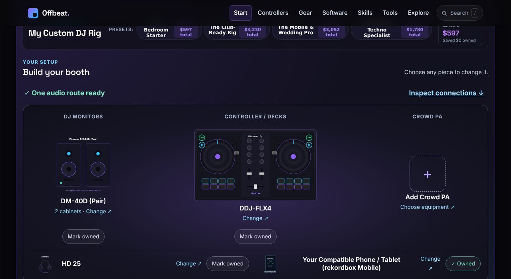

01 · Plan the rig
Rig planner
Price the whole setup, not one box.
Start from a controller and build outward: headphones, monitors, stands and the cables nobody remembers to budget for. Every line is priced, priced-from a named source, and the total moves as you change your mind. You can mark what you already own so it drops out of the bill.
- Time
- 3–5 minutes
- Needs
- Nothing to install
- Cost
- Free
Prices are dated October 2026 estimates, not live quotes. Each line links to the product page it was checked against.